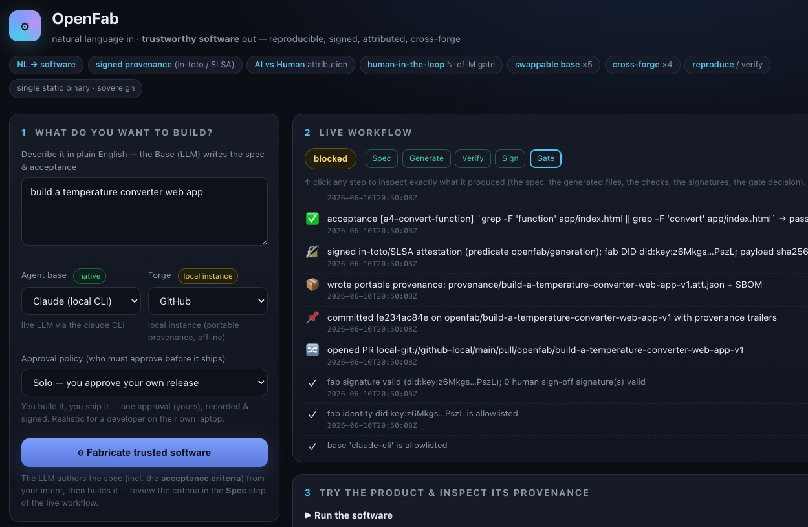
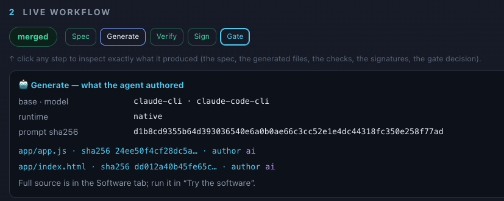
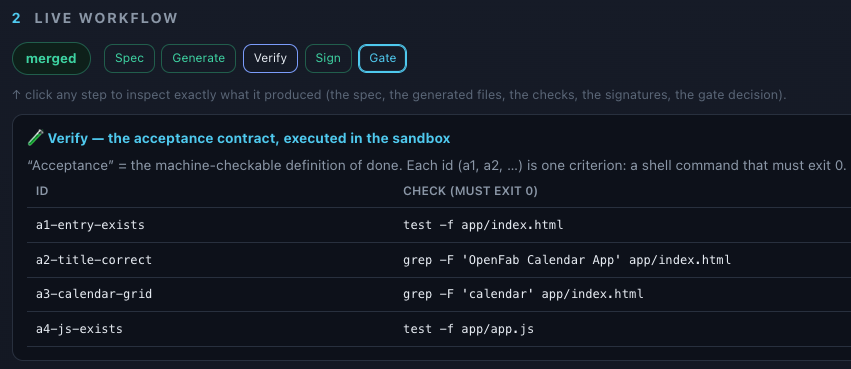
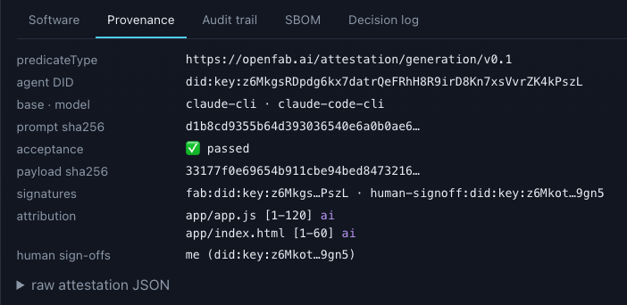
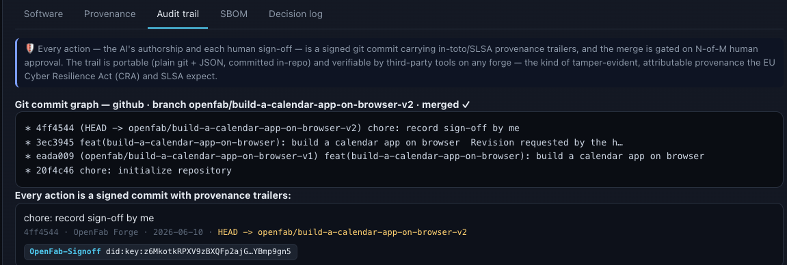
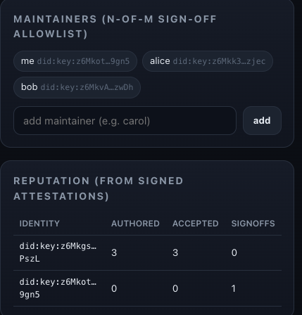
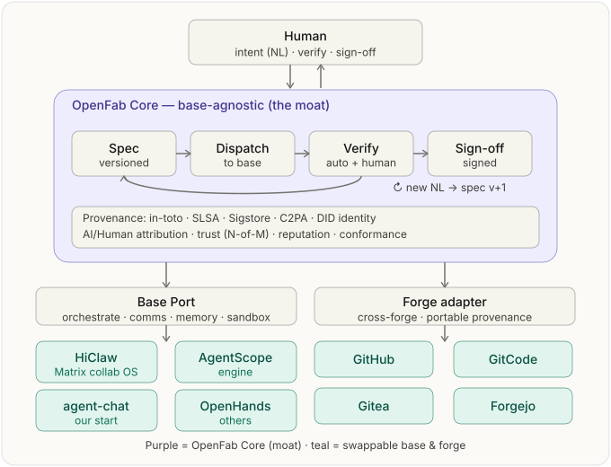

Natural language in.
Trustworthy software out.
AI now writes a fast-growing share of the world's code — but the software supply chain assumes a human author, working at human speed, under human review. OpenFab is the fab that closes the gap: every artifact it produces carries a reproducible build, signed provenance, and AI/Human attribution — on a swappable agent base and a swappable forge, under neutral governance.

Composes mature open standards — it doesn't reinvent them
AI writes the code. The trust model broke.
When an agent emits a change at machine scale, the questions that decide whether you can trust it suddenly have no answer — exactly as regulators demand more proof.
Who wrote this?
Which model, which agent identity, from which exact instruction? Authorship has gone opaque.
Who's accountable?
Did a responsible human actually approve it — or did it merge because the tests happened to pass?
Does it meet a contract?
"Looks right" and "tests are green" are not "does what was asked." Intent is rarely captured.
Can anyone verify it?
Independently, later, without trusting the tool that produced it? Usually not.
The pieces exist. The integration doesn't.
The open ecosystem has produced remarkable primitives — for provenance, signing, identity, SBOMs, policy, agents, and forges. What's missing is the thing that turns the parts into a guarantee: a single, open, neutral fab that takes natural language in and emits trustworthy software out, with provenance that's portable, AI-aware, and end-to-end.
- Optimize for speed of generation
- Opaque authorship, no portable provenance
- Lock-in to one agent + one forge
- "Tests pass" ≠ accountable, verifiable release
- Secure human-authored builds
- No first-class notion of AI authorship
- No human-in-the-loop intent gate
- Bolted on after the fact, per platform
- Closes the loop: AI authorship under human accountability
- Portable, forge-neutral, AI-aware provenance
- Swappable base + forge — no lock-in
- A verifiable contract, signed and gated end-to-end
The spec cycle — a sentence becomes trustworthy software
Every step is a signed git commit carrying provenance trailers. The full trail is plain git + JSON, committed in the repo — auditable and verifiable by third-party tools on any forge.
- 1
Intent
You describe what you want in plain English. That's the only thing you supply.
- 2
Spec
The LLM authors a versioned, machine-checkable spec and its acceptance criteria — the contract.
- 3
Generate
An agent base writes the code; authorship recorded by DID, model, and prompt hash.
- 4
Verify
Acceptance criteria re-run in a policy-gated sandbox. No vacuous passes.
- 5
Sign
An in-toto/SLSA attestation + SBOM, signed; per-file AI/Human attribution.
- 6
Gate
Merge is blocked until N-of-M human maintainers sign off. Never self-approved.
- 7
Reproduce
Anyone re-verifies signatures, confirms bit-identical source, and re-runs acceptance — without OpenFab.
Every value proposition is an artifact you can inspect
Click through a real run in the web UI — the same artifacts a third party can verify independently.
Who built it, from what instruction
The openfab/generation in-toto predicate records the agent DID, base · model, parameters, the prompt hash, and every changed file/line range tagged author: ai | human. Human sign-offs are appended as human authorship with signatures.

Verification, not faith
"Acceptance" is the machine-checkable definition of done — each criterion a shell command that must exit 0, re-run in the sandbox by anyone, anytime. Reproduce confirms the committed source is bit-identical to the signed digests.

in-toto / SLSA, signed and pinned
An in-toto/SLSA attestation, signed (ed25519 over canonical JSON) by the fab's did:key, with a payload_sha256 tamper-pin and a distinct did:key per human sign-off. Portable JSON, committed in-repo.

Every action is a signed commit
The AI's authorship and each human sign-off is a signed git commit carrying provenance trailers, the merge gated on N-of-M. The trail is plain git + JSON, so third-party tools render and verify it natively on any forge.

Accountability by design, standing that compounds
The gate releases only on N-of-M sign-off from a pre-approved maintainer allowlist. Reputation is projected purely from signed attestations — standing earned from verifiable work, not asserted in a side database.

The AI-BOM for AI-generated software
SBOM tells you what's in your software. OpenFab's AI-BOM tells you who and what wrote it — human vs AI, which model, which prompt — signed and verifiable on any forge. We define the open predicate for how that bill of materials for generated code should look.
- 🧬 Human-vs-AI authorship — per file & line range
- 🤖 Model & agent identity — which model wrote it
- 🔑 Prompt fingerprint — sha256 of the generation prompt
- ✅ The acceptance contract — the exact checks, embedded
- 🔏 Signatures & N-of-M sign-off — did:key, ed25519
- 📦 Bound to file digests — tamper-evident, portable
Built on in-toto / SLSA / Sigstore / DID — we don't reinvent the envelope; we define the missing predicate for AI authorship, proposed as a neutral community-governed open standard. Read the spec →
Neutral by construction — ports & adapters
Two orthogonal pluggable axes around a stable Core. Swap the agent base or the git forge without touching the trust machinery. No single vendor's agent, forge, or license can capture the project.

Agent bases ×5 · BasePort
Native if its runtime is connected, else bridged through the LLM backend — badged honestly in the provenance.
Forges ×4 · ForgePort
Live with credentials, else an offline local instance that still proves portable, in-repo provenance.
Core the moat
Base- and forge-independent. Identical guarantees regardless of what runs underneath.
The fab builds the fab
OpenFab develops OpenFab — each self-change verified by the project's own tests, signed with provenance, and gated by the same N-of-M human trust model. Its own provenance trail is the reference showcase. The most sensitive component, the trust gate, is always versioned, never hot-loaded, never self-approved.
Trust that travels with the code
Enterprises shipping AI code
Provenance and signed attestation that satisfy CRA / SLSA / audit — without slowing teams to human-only review.
Regulators & auditors
Portable, third-party-verifiable evidence of who built what, from what instruction, approved by whom.
Open-source maintainers
An N-of-M gate for untrusted or AI-generated contributions, and reputation earned from signed work.
Sovereign & air-gapped
A single static binary, offline-verifiable identity, no mandatory cloud service.
The broader ecosystem
A neutral standard and a reference implementation — instead of N incompatible closed platforms.
Platform & tool builders
Plug your agent or forge into a stable interface and inherit the whole trust pipeline.
A thin, neutral layer — the seams are the invitation
Adopting OpenFab is additive, not a migration. The ecosystem grows by contributing adapters, policies, and conformance profiles — each behind a stable interface, none requiring changes to the trusted Core.
Base adapters
Bring a new agent runtime behind BasePort.
Forge adapters
Add a git host behind ForgePort; provenance stays portable.
Policies
Rego trust rules — allowlists, N-of-M, sandbox boundaries.
Conformance profiles
Define and certify what "trustworthy" means for your domain.
Vendor-neutral and intended for community governance (the way SLSA sits under OpenSSF), licensed Apache-2.0. Neutrality is a feature: because the base and forge are swappable, the guarantee OpenFab makes is the same regardless of whose infrastructure runs underneath.
Fabricate something trustworthy
Clone it, run the web UI, and watch a sentence become signed, attributed, gated software.
# clone the open, neutral fab
git clone https://github.com/open-fab-ai/openfab
cd openfab
demo/run_web_demo.sh # builds + opens the web UI on :8787
Every lighter v0.1/v0.2 choice (did:key, gated-host sandbox, SPDX-lite) names its production swap (Sigstore, Podman/gVisor, Syft) — nothing is overstated.